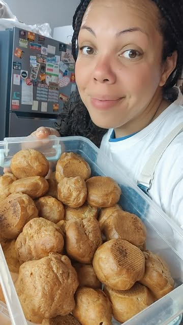
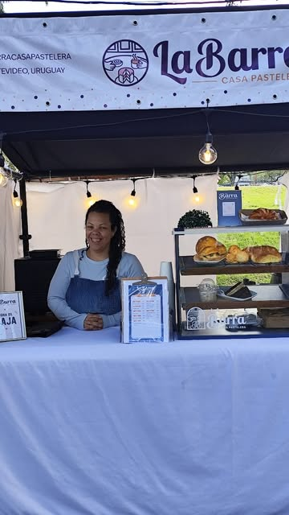

La Barra Casa Pastelera
La Barra empezó como La Barra Bakery y hoy es una casa pastelera: tortas para celebraciones, meriendas y coffee breaks para empresas, siempre hechos a mano y con ingredientes de calidad.
Cumplimos tiempos y cuidamos cada detalle, desde una carrot cake clásica hasta una torta temática diseñada a partir de tu idea.
- 5,0 estrellas en Google con 134 opiniones
- Pastelería artesanal en Ciudad Vieja, Montevideo
- Atención por WhatsApp: 096 208 205


Lo que dicen nuestros clientes
5,0 ★ en Google
“Esta vez la elección fue una Red Velvet y, como siempre, superó las expectativas. El asesoramiento, la atención y la facilidad para hacer el pedido, un 10/10. Una de las mejores tortas que he comido.”
“Encargué una torta temática de Harry Potter inspirada en Ravenclaw y el resultado fue increíble. Captaron perfecto la idea, hubo investigación, creatividad y mucho compromiso. Y la torta estaba riquísima.”
“Una de las mejores carrot cake que he probado. 100% recomendable: a todos les encantó, inclusive a los que no son muy fans de la torta de zanahoria.”